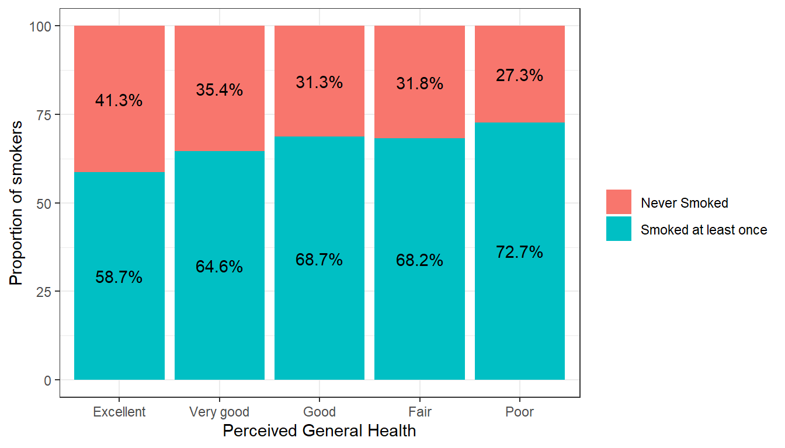
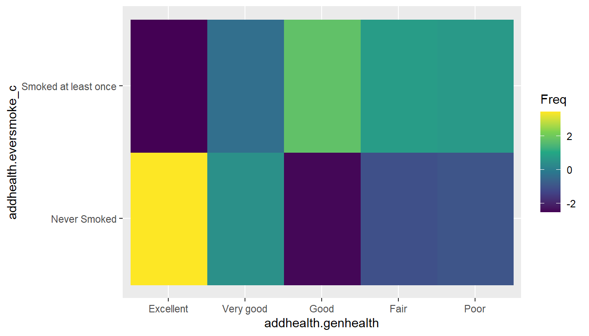

| Alive | Dead | Sum | |
|---|---|---|---|
| Control | 44405 | 505 | 44910 |
| Mammogram | 44425 | 500 | 44925 |
| Sum | 88830 | 1005 | 89835 |
Inference on proportions
lec07d
Opening Remarks
If we are only concerned with testing the hypothesis that the proportion of successes between two groups are equal \(p_{1}-p_{2}=0\), we can leverage the Normal distribution and conduct a Z-test for two proportions.
However in this class we will use the more generalizable model via Chi-squared test of association/equal proportions.
Chi-squared test of equal proportions
A 30-year study was conducted with nearly 90,000 female participants. (Miller AB. 2014) During a 5-year screening period, each woman was randomized to one of two groups: in the first group, women received regular mammograms to screen for breast cancer, and in the second group, women received regular non-mammogram breast cancer exams. No intervention was made during the following 25 years of the study, and we’ll consider death resulting from breast cancer over the full 30-year period.
Results from study
The explanatory variable is treatment (additional mammograms), and the response variable is death from breast cancer.
Are these measures associated?
Assume independence/no association
- If mammograms are more effective than non-mammogram breast cancer exams, then we would expect to see additional deaths from breast cancer in the control group (there is a relationship).
- If mammograms are not as effective as regular breast cancer exams, we would expect to see no difference in breast cancer deaths in the two groups (there is no relationship).
- Need to figure out how many deaths would be expected, if there was no relationship between treatment death by breast cancer,
- Then examine the residuals - the difference between the observed counts and the expected counts in each cell.
Table notation
Tables can be described by \(i\) rows and \(j\) columns. So the cell in the top left is \(i=1\) and \(j=1\).
| \(O_{ij}\) | Alive | Dead | Total |
|---|---|---|---|
| Mammo | \(n_{11}\) | \(n_{12}\) | \(n_{1.}\) |
| Control | \(n_{21}\) | \(n_{22}\) | \(n_{2.}\) |
| Total | \(n_{.1}\) | \(n_{.2}\) | \(N\) |
In our DATA = MODEL + RESIDUAL framework, the DATA (\(n_{11}, n_{12}\), etc)is the observed counts \(O_{ij}\) and the MODEL is the expected counts \(E_{ij}\).
Calculating the expected count
Since we assume the variables are independent (unless the data show otherwise) the expected count for each cell is calculated as the row total times the column total for that cell, divided by the overall total.
\[E_{ij} = \frac{n_{i.}n_{.j}}{N}\]
In a probability framework this is stated as two variables \(A\) and \(B\) are independent if \(P(A \cap B) = P(A)*P(B) = \frac{n_{i.}}{N}*\frac{n_{.j}}{N}\)
Calculating the residuals
The residuals are calculated as \((O_{ij} - E_{ij})\), observed minus expected.
Expected
chisq.test(a$Tx, a$Outcome)$expected %>% kable(digits=2)| Alive | Dead | |
|---|---|---|
| Control | 44407.58 | 502.42 |
| Mammogram | 44422.42 | 502.58 |
Residuals
chisq.test(a$Tx, a$Outcome)$residuals %>% kable(digits=3) | Alive | Dead | |
|---|---|---|
| Control | -0.012 | 0.115 |
| Mammogram | 0.012 | -0.115 |
If mammograms were not associated with survival, there were 0.01 fewer people still alive than expected, and 0.11 more people dead.
\(\chi^2\) test statistic
The \(\chi^2\) test statistic is defined as the sum of the squared residuals, divided by the expected counts, and follows a \(\chi^2\) distribution with degrees of freedom (#rows -1)(#cols -1).
\[ \sum_{ij}\frac{(O_{ij}-E_{ij})^{2}}{E_{ij}} \]
dist_chisq(chi2=.027, deg.f=1, geom.colors=c("#FDE725FF", "#440154FF"))
Assumptions for this distribution to hold
- Sample size is large
- \(E_{ij} \geq 5\) for at least 80% of cells
Conclusion
In this example, the test statistic was 0.017 with p-value 0.895.
So there is not enough reason to believe that mammograms in addition to regular exams are associated with a reduced risk of death due to breast cancer.
This example demonstrated how we examine the residuals to see how closely our DATA fits a hypothesized MODEL.
Example: Income and General Health
Using the Addhealth data set, what can we say about the relationship between smoking status and a person’s perceived level of general health?
Is there an association between lifetime smoking status and perceived general health?
1. Identify response and explanatory variables
- The binary explanatory variable is whether the person has ever smoked an entire cigarette (
eversmoke_c). - The categorical explanatory variable is the person’s general health (
genhealth) and has levels “Excellent”, “Very Good”, “Good”, “Fair”, and “Poor”.
2. Visualize and summarise
plot_xtab(grp=addhealth$eversmoke_c, x=addhealth$genhealth,
show.total = FALSE, margin="row", legend.title="") +
theme_bw() + theme(legend.position="bottom") + xlab("General Health")
The percentage of smokers seems to increase as the general health status decreases. Almost three-quarters (73%, n=40) of those reporting poor health have smoked an entire cigarette at least once in their life compared to 59% (n=573) of those reporting excellent health.
Plot the % who smoked at least once. This method only works when there is a binary outcome.
addhealth %>%
group_by(genhealth) %>%
summarize(p = mean(eversmoke_c == "Smoked at least once", na.rm=TRUE)*100,
n = n()) %>%
na.omit() %>%
ggplot(aes(x=genhealth, y=p, color=genhealth)) +
geom_point(aes(size = n)) +
scale_y_continuous(limits=c(0, 100)) +
geom_segment(aes(x=genhealth, xend=genhealth, y=0, yend=p)) +
scale_color_discrete(guide="none") + theme_bw() +
ylab("Proportion of smokers") +
xlab("Perceived General Health")
A stacked barchart can work for any size categorical outcome, but the more categories/segments, the harder it will be to see the %’s.
addhealth %>%
count(genhealth, eversmoke_c) %>%
na.omit() %>%
group_by(genhealth)%>%
mutate(p = n/sum(n)*100) %>%
ggplot(aes(x=genhealth, y=p, fill=eversmoke_c,
label = paste0(round(p, 1), "%"))) +
geom_col() + theme_bw() +
scale_fill_discrete(name = "") +
geom_text(position=position_stack(0.5)) +
ylab("Proportion of smokers") +
xlab("Perceived General Health")
3. Write the null and research hypothesis in words and symbols.
- Null Hypothesis: The proportion of smokers is the same across all levels of general health.
- Alternate Hypothesis: At least one group has a different proportion of smokers compared to the other general health groups.
Let \(p_{1}, p_{2}, \ldots, p_{5}\) be the true proportion of smokers in each of the 5 health categories: (1) Excellent to (5) Poor.
\(H_{0}: p_{1} = p_{2} = \ldots p_{5}\)
\(H_{A}:\) At least one \(p_{j}\) is different.
4. State and justify the analysis model. Check assumptions.
- I will conduct a \(\chi^{2}\) test of association because both variables are categorical.
- The expected value in each combination of smoking status and general health is at least 5.
chisq.test(addhealth$genhealth, addhealth$eversmoke_c)$expected addhealth$eversmoke_c
addhealth$genhealth Never Smoked Smoked at least once
Excellent 339.50324 636.49676
Very good 681.44144 1277.55856
Good 584.04297 1094.95703
Fair 148.88052 279.11948
Poor 19.13184 35.868165. Conduct the test
And make a decision about the plausibility of the alternative hypothesis.
chisq.test(addhealth$genhealth, addhealth$eversmoke_c)
Pearson's Chi-squared test
data: addhealth$genhealth and addhealth$eversmoke_c
X-squared = 30.795, df = 4, p-value = 3.371e-06We have strong evidence in favor of the alternative hypothesis, p<.0001
6. Write a conclusion
We can conclude that there is an association between ever smoking a cigarette in their life and perceived general health (\(\chi^{2} = 30.8, df=4, p<.0001\)).
Multiple comparisons: Which group is different?
Just like with ANOVA, if we find that the Chi-squared test indicates that at least one proportion is different from the others, it’s our job to figure out which ones might be different! We will analyze the residuals to accomplish this.
Examine the residuals
The residuals (\(O_{ij} - E_{ij}\)) are automatically stored in the model output. You can either print them out and look at the values directly or create a plot. You’re looking for combinations that have much higher, or lower expected proportions.
health.smoke.model <- chisq.test(addhealth$genhealth, addhealth$eversmoke_c)
health.smoke.model$residuals |> round(2) addhealth$eversmoke_c
addhealth$genhealth Never Smoked Smoked at least once
Excellent 3.45 -2.52
Very good 0.48 -0.35
Good -2.44 1.78
Fair -1.06 0.77
Poor -0.94 0.69plot.residuals <- health.smoke.model$residuals %>% data.frame()
ggplot(plot.residuals, aes(x=addhealth.genhealth, y=addhealth.eversmoke_c)) +
geom_raster(aes(fill=Freq)) + scale_fill_viridis_c()
The proportion of non-smokers in the excellent health category is much higher than expected if there were no relationship between these two variables.
All pairwise comparisons
# library(rcompanion)
smoke.by.genhealth <- table(addhealth$genhealth, addhealth$eversmoke_c)
rcompanion::pairwiseNominalIndependence(smoke.by.genhealth, fisher = FALSE, gtest=FALSE) |> kable(digits = 3)| Comparison | p.Chisq | p.adj.Chisq |
|---|---|---|
| Excellent : Very good | 0.002 | 0.007 |
| Excellent : Good | 0.000 | 0.000 |
| Excellent : Fair | 0.001 | 0.004 |
| Excellent : Poor | 0.039 | 0.079 |
| Very good : Good | 0.008 | 0.020 |
| Very good : Fair | 0.151 | 0.252 |
| Very good : Poor | 0.212 | 0.303 |
| Good : Fair | 0.840 | 0.840 |
| Good : Poor | 0.529 | 0.588 |
| Fair : Poor | 0.498 | 0.588 |
Using the adjusted (for multiple comparisons) p-value column, the proportion of smokers in the Excellent group (41.3%) is significantly different from nearly all other groups (35.4% for Very Good, 31.3% for Good, 31.8% for Fair).
But why is it not significantly different from the 27.3% in the Poor group?
The effect of small sample sizes
Why is 41.3% significantly different from 35.4%, but NOT different from 27.3%?
The standard error is always dependent on the sample size. Here, the number of individuals in the Poor health category is much smaller compared to all other groups - so the margin of error will be larger - making it less likely to be statistically significantly different from other groups.
When you have a small numbers (typically n<10) in one or more cells the value of the expected value \(E_{ij}\) for that cell likely will be below, or close to 5. This means distribution of the test statistic can no longer be modeled well using the \(\chi^{2}\) distribution. So we again go to a non-parametric test that uses a randomization based method.
Fishers Exact Test
fisher.test(addhealth$genhealth, addhealth$eversmoke_c,
simulate.p.value = TRUE)
Fisher's Exact Test for Count Data with simulated p-value (based on 2000 replicates)
data: addhealth$genhealth and addhealth$eversmoke_c
p-value = 0.0004998
alternative hypothesis: two.sidedThen you can use the pairwiseNominalIndependence function for all pairwise comparisons again, with the fisher argument set to TRUE.
Chi-Squared test of Association or Independence
C ~ C
We can still use the \(\chi^{2}\) test of association to compare categorical variables with more than 2 levels. In this case we generalize the statement to ask: Is the distribution of 1 variable the same across levels of another variable?. In this sense, it is very much like an ANOVA.
Mathematically the \(\chi^{2}\) test of association is the exact same as a test of equal proportions.
Example
Let’s analyze the relationship between a person’s income and perceived level of general health.
The categorical explanatory variable is income, binned into 4 ranges (income_cat).
addhealth$income_cat <- Hmisc::cut2(addhealth$income, g = 4)Visualize and summarize
plot_xtab(grp=addhealth$income_cat,
x=addhealth$genhealth,
show.total = FALSE, margin="row",
legend.title="") +
theme(legend.position = "top")
The income distribution is nearly flat for who rate themselves in excellent or very good condition. However, the proportion of individuals in the lower income categories increase as perceived general health decreases. Over 80% of those that rate themselves as in Poor condition have an annual income less than $35,500.
State Hypothesis
Let \(p_{1e}, p_{2e}, p_{3e}, p_{4e}\) be the true proportion of income brackets within those that say they are in excellent health.
Let \(p_{1v}, p_{2v}, p_{3v}, p_{4v}\) be the true proportion of income brackets within those that say they are in very good health.
… and so forth for each health category.
\(H_{0}:\) The income distribution (\(p_{1j}, p_{2j}, p_{3j}, p_{4j}\)) is the same in each of the \(j\) general health categories (no association)
\(H_{A}:\) The income distribution differs for at least one of the general health categories (association)
Test the relationship & make a conclusion.
chisq.test(addhealth$genhealth, addhealth$income_cat)
Pearson's Chi-squared test
data: addhealth$genhealth and addhealth$income_cat
X-squared = 100.87, df = 12, p-value = 3.756e-16chisq.test(addhealth$genhealth, addhealth$income_cat)$expected addhealth$income_cat
addhealth$genhealth [10225, 25500) [25500, 35500) [35500, 51000) [51000,250000]
Excellent 227.563693 187.881768 187.881768 170.672770
Very good 452.481297 373.578865 373.578865 339.360973
Good 359.280146 296.629872 296.629872 269.460110
Fair 77.030604 63.598221 63.598221 57.772953
Poor 7.644258 6.311274 6.311274 5.733194There is sufficient evidence to conclude that the distribution of income is not the same across all general health status categories. The Chi-squared test of association is valid here because of the large sample size, and all expected values are over 5.
Other analysis for categorical variables
There is a slew of methods to analyze categorical data. To learn more start with Categorical Data Analysis by Alan Agresti, who has written extensively on the subject.